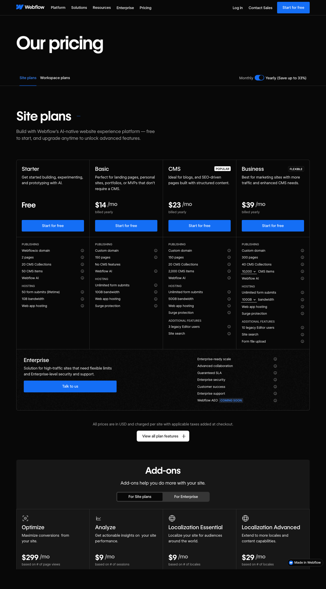

Case Claim
The interesting move is not simply that Webflow has multiple plans. The more strategic move is that it monetizes the same customer workflow through separate economic surfaces: a Site plan for each published property, a Workspace plan for staging and portfolio-level collaboration, and seat types that meter what each collaborator is allowed to do.
Tier Ladder Analysis
Webflow currently presents a public pricing ladder that starts with Site plans and then branches into Workspace plans for collaboration. The ladder matters because Webflow is not just stepping price upward; it is teaching the buyer to separate publishing, collaboration, and permissions into different commercial decisions.
- Tier count: The default Site plans ladder shows five visible options: Starter, Basic, CMS, Business, and Enterprise. The page then adds a separate Workspace ladder when the buyer switches from publishing to collaboration planning.
- Target buyer by tier: Starter fits experimentation, Basic fits simple landing pages and portfolios, CMS fits content-heavy sites, Business fits larger marketing sites, and Enterprise fits buyers with high traffic or flexible-limit needs. Workspace plans then target teams, freelancers, agencies, and larger operating groups that need stronger collaboration and governance.
- Tier labels: On the Site-plan ladder, the visible labels are Starter, Basic, CMS, Business, and Enterprise.
- Anchor prices: The public Site-plan anchors shown are $0 for Starter, $14 per month billed yearly for Basic, $23 for CMS, $39 for Business, and contact sales for Enterprise.
- Price gaps: The visible paid step-ups on the Site ladder are $14 from Starter to Basic, $9 from Basic to CMS, and $16 from CMS to Business, before the ladder shifts to Enterprise negotiation.
- Value-add argument: Webflow justifies moving up the Site ladder with stronger publishing capacity and higher operating limits, then uses Workspace plans and role-based seats to monetize team staging, governance, and permission depth once the buyer's problem expands beyond a single live site.

The screenshot matters because the page itself lays out the commercial sequence: first buy a Site plan to publish, then optionally add site add-ons, then optionally upgrade the Workspace. That ordered structure is the core mechanism, not just page decoration.
Mechanism Summary
Webflow splits one website workflow into three monetization surfaces. The live site is monetized at the asset level through per-site plans. Portfolio-level staging, governance, and advanced collaboration are monetized at the Workspace level. Finally, role intensity is monetized again through full, limited, and free reviewer seats. This gives Webflow more than one expansion path without forcing every buyer into a single all-inclusive subscription.
Target Buyer Inference
The structure points toward buyers who treat websites as operating assets with multiple stakeholders, not one-person side projects. Two especially plausible target groups stand out:
- In-house teams: marketing and web operations teams that need to publish one or more live sites while controlling who can design, edit, or simply review.
- Service providers: freelancers and agencies that need collaborative access with clients, guest contributors, and site-specific permissions without giving every participant full design authority.
The pricing page's split between team Workspaces and service-provider Workspaces supports this reading, and the role documentation shows that Webflow expects materially different collaborator types inside the same account.
Decision Friction
- Layer-selection burden: buyers have to decide whether a problem should be solved by a Site plan upgrade, a Workspace plan upgrade, or a seat change.
- Role-classification burden: the official seat model forces a distinction between full, limited, reviewer, client, and guest access rather than one generic collaborator count.
- Portfolio budgeting burden: Site plan fees are billed separately from Workspace plans, but the Help Center notes that they still run through the Workspace payment card, which can turn one website decision into a cross-team budget conversation.
The friction is therefore structural. Webflow does not just ask, "How many users do you have?" It asks the buyer to map sites, collaboration, and permissions into separate purchasing decisions before the system feels simple.
Exposure and Risk Logic
Webflow gains monetization flexibility, but it carries packaging-complexity risk. If customers accept the layers, Webflow can expand with every new live site, every higher-governance Workspace, and every collaborator who moves into a more powerful seat. But if the layers feel too disconnected, the model starts to look like one customer job being monetized three times. That creates risk of buying hesitation, admin fatigue, and clearer price-comparison attacks from simpler rivals.
Logic Flaw, Vulnerability, and Strategic Opportunity
The weak spot is that the commercial boundary can mirror Webflow's product architecture more closely than the buyer's outcome. Many buyers experience the real job as "get the site live and keep the team aligned." Webflow asks them to decompose that job into separate hosting, workspace, and seat purchases. That may be administratively elegant for Webflow, but it can feel like commercial fragmentation to smaller teams or to buyers with only one live site and a modest set of collaborators.
A competitor could attack by bundling the layers around the buyer's project outcome instead of around internal product surfaces. One path would be a package where each published site includes a collaborator allowance and a reviewer pool by default, with upgrades tied to live-property scale rather than separate Workspace decisions. For agencies, another path would be client access that is standard rather than gated by service-provider Workspace structure.
The opportunity is not just lower price. It is a pricing story that maps more directly to how the buyer frames the purchase.
Primary Sources
- Webflow. (n.d.). Plans & pricing. Retrieved April 22, 2026, from https://webflow.com/pricing
- Webflow. (2025, November 6). Choose a Site plan. Retrieved April 22, 2026, from https://help.webflow.com/hc/en-us/articles/33961232582419-Choose-a-Site-plan
- Webflow. (2026, February 2). Choose a Workspace plan. Retrieved April 22, 2026, from https://help.webflow.com/hc/en-us/articles/33961218263059-Choose-a-Workspace-plan
- Webflow. (2026, February 2). Roles and permissions overview. Retrieved April 22, 2026, from https://help.webflow.com/hc/en-us/articles/33961273067411-Roles-and-permissions-overview